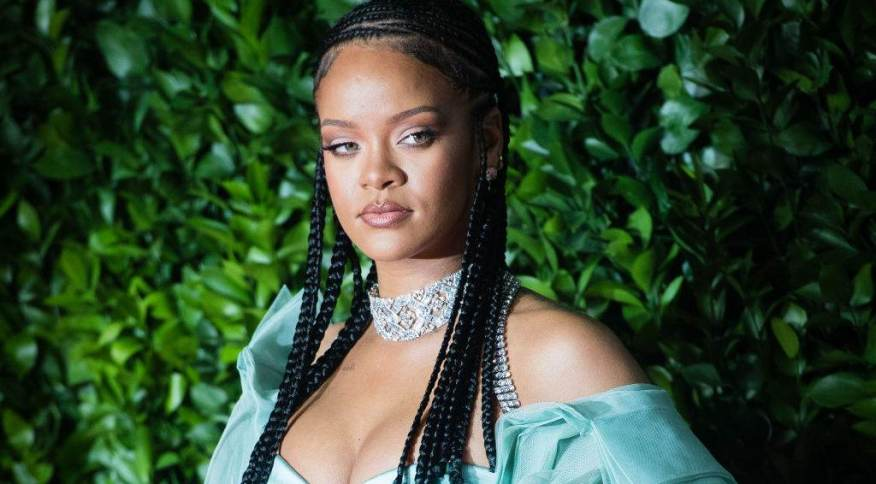

RIHANNA
Robyn Rihanna Fenty é uma cantora, compositora e empresária barbadense mas de grande espaço na indústria musical americana e internacional. Além da carreira musical é conhecida pelo seu envolvimento em causas humanitárias, indústria da moda e pela sua marca de maquiagem Fenty Beauty. Ganhou destaque na indústria musical com o lançamento de seus dois primeiros álbuns que tem influencias fortes de ritmos caribenhos. Em seu terceiro álbum realmente subiu à fama quando aderiu à mistura do dance-pop e R&b as suas canções sem deixar de lado suas origens caribenhas como o reggae e assim, alcançou um estrelato maior e se tornou um ícone musical estabelecido na indústria de entretenimento e na indústria da musica pop. Seus álbuns seguintes seguiram as mesmas experimentações e misturas de gêneros que consolidaram o estilo musical de Rihanna ao longo dos anos. A cantora já comercializou mais de 275 milhões de obras musicais em todo o mundo, se tornando um dos dez artistas musicais mais vendidos de todos os tempos e é dona de hits marcantes a geração da década passada como "SOS", "Umbrella", "Don't Stop the Music","Take a Bow", "Rude Boy", "Only Girl (In the World)", "What's My Name?", "We Found Love", "Diamonds", "Love the Way You Lie" e "Work. Rihanna já vendeu mais 275 milhoes de obras musicas e é uma das artistas mais vendidas de todos os tempos e tem seu trabalho musical premiado em nove Grammy Awards e doze Billboards.